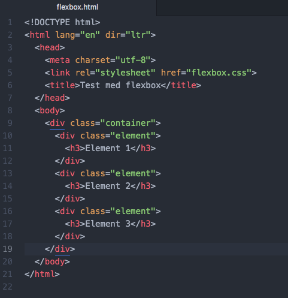
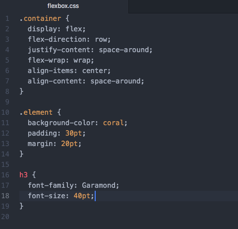
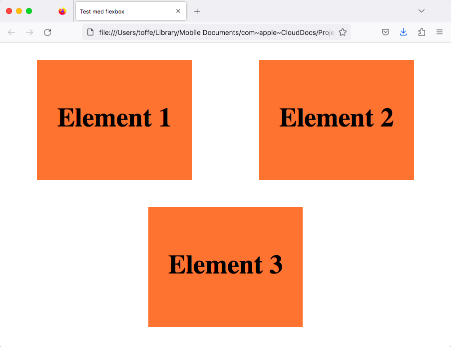
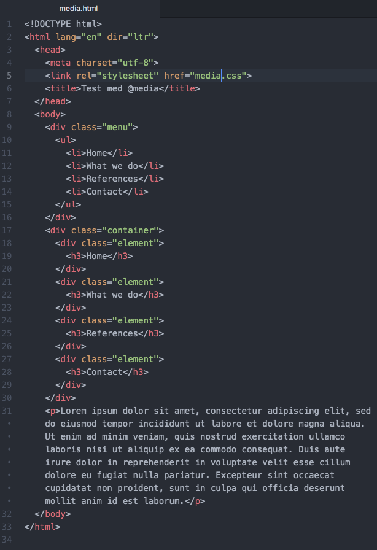
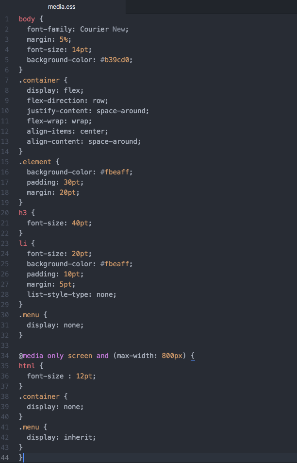
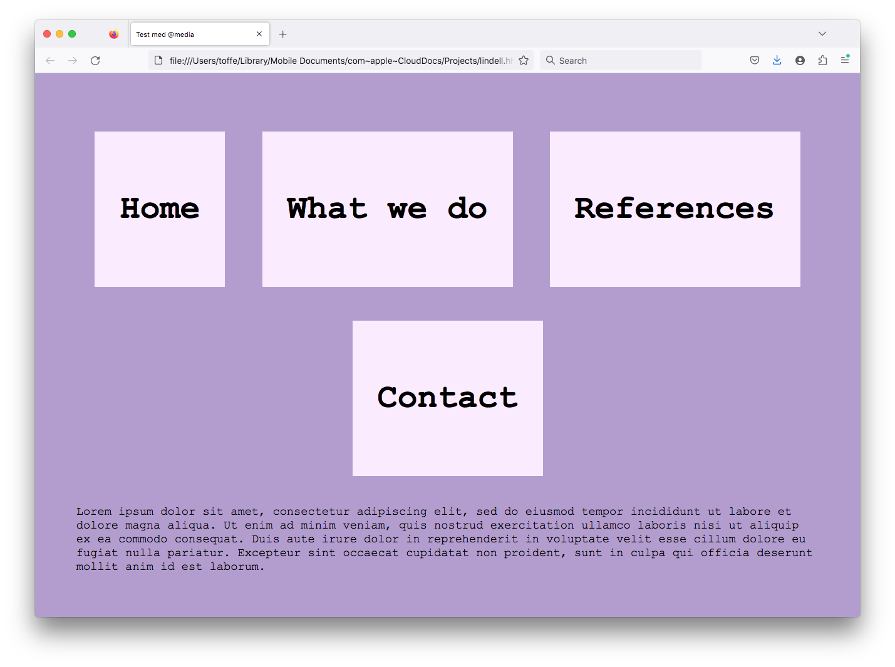
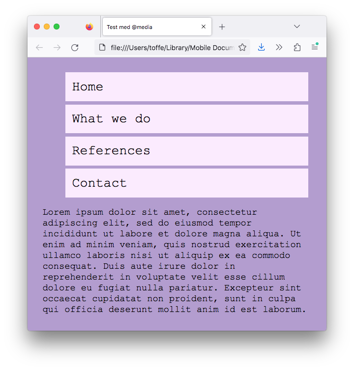

3. Responsiva sidor
Till nästa tar vi och lär oss göra sidan så att den anpassar sig efter bredden på användarens browser.
Flexbox
Flexbox är ett verktyg med vars hjälp du placerar div element så att de är responsiva på webbsidan. Elementen som du vill att är responsiva placerar du i en behållare där Flexbox är aktiverat.
En enkel användning av Flexbox där tre div-element placeras bredvid varanda så att avståndet mellan elementen är jämt ser du nedan. Först som HTML:

Sedan som CSS. Märk koden i .container elementet.

Och till sist slutresultatet.

Tag gärna och skriv av koden och testa på att ändra bredden för browsern eller klicka här så får du sidan i en ny flik.
En bra luntlapp för hur man jobbar med Flexbox hittar du här.
@media
Med @media kan du ända på hur webbsidans innehåll beter sig baserat på bredden för browsern. Du kan gömma eller visa element. Du kan också göra en hel del annat, men vi klarar oss långt med det.
Vi utnyttjar förra sidan och ändrar på koden så att vi har två olika menyer som syns beroende på sidbredden. Den under class="menu" är för smalare skärmar och class="container" är för bredare skärmar.

Sedan som CSS. Märk koden i .menu elementet och koden i slutet under @media. Med display: kan vi bestämma om något visas eller inte.

Och till sist slutresultatet.

och

Tag gärna och skriv av koden och testa på att ändra bredden för browsern eller klicka här så får du sidan i en ny flik.
För att få reda på bredden för sidan så måste du jobba med Firefox eller Chrome. Högerklicka på sidan och välj Inspektera. En bra referens för skärmas bredd hittar du här.
Uppgifter
- Din första uppgift är att skapa en webbsida för ett företag som säljer te. Bekanta dig med instruktionerna här.
Bilderna för uppgiften hittar du här.
- Följande uppgift är att skapa en responsiv sida för opikerföretaget Tortoiseshell Optics. Se här instruktionerna för hur webbsidan skall reagera på olika apparater.
Bilderna för uppgiften hittar du här.
- Kapitlets sista uppgift handlar om att skapa en webbsida för en skola. Den skall fungera på dator och mobil. Se närmare instruktioner här.
Bilderna för uppgiften hittar du här.